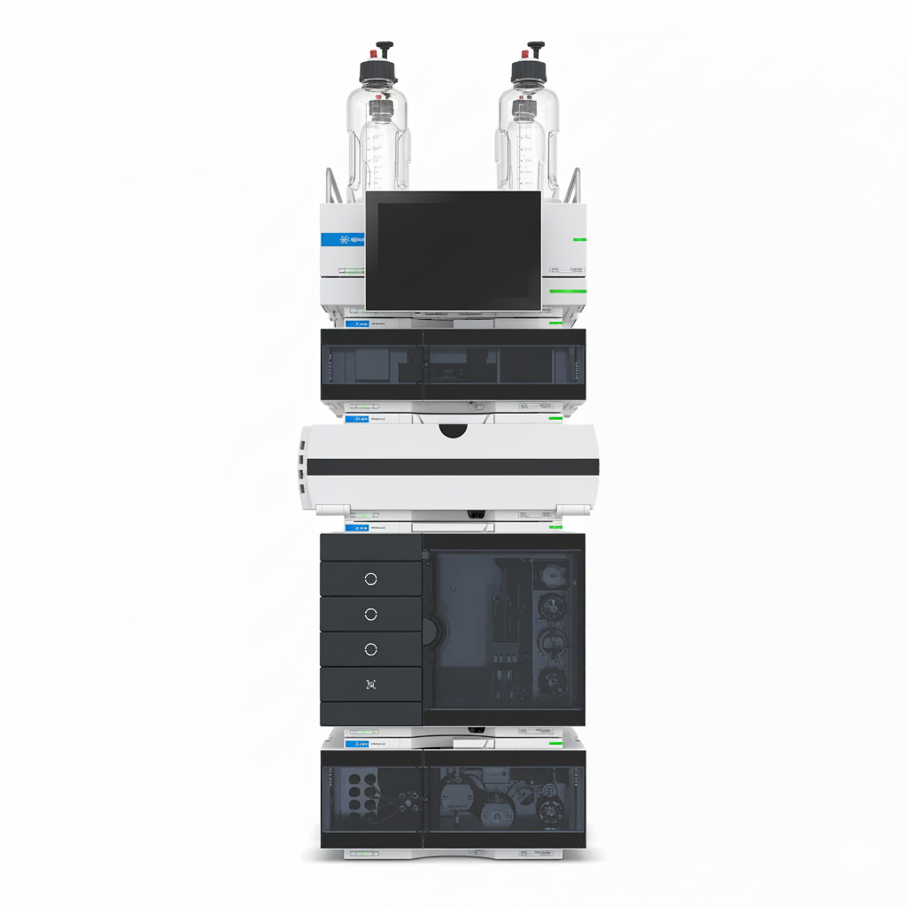

Initializing System...

Fill solvent bottles and remove dissolved gases using helium sparging.
Open the purge valve and run the pump to remove air bubbles from the lines.
Heat the column to operating temperature and stabilize baseline.
All startup checks passed. The instrument is ready for analysis.
Standard reverse phase. Best for most drug analyses.
Less retentive. Faster elution for hydrophobic compounds.
π-π interactions. Different selectivity for aromatics.
For polar compounds. Reverse gradient (high organic start).
Method: --
Date: --
Analyst: SimuPharma User
Select a fault to simulate during the next run. Learn to identify and troubleshoot common HPLC problems.
No faults - ideal conditions
Noisy baseline, irregular pressure
Peak tailing, reduced efficiency
Pressure drop, RT shift
Ghost peaks, elevated baseline
Reduced sensitivity, noise
Use the analytical balance to weigh the required amount of sample/standard accurately.
Transfer the weighed sample to a volumetric flask and dissolve in the appropriate solvent.
Prepare working solutions by serial dilution if needed.
Filter the sample through a syringe filter to remove particulate matter before injection.
Transfer the filtered sample into an HPLC vial with a crimp/snap cap and place it in the autosampler tray.